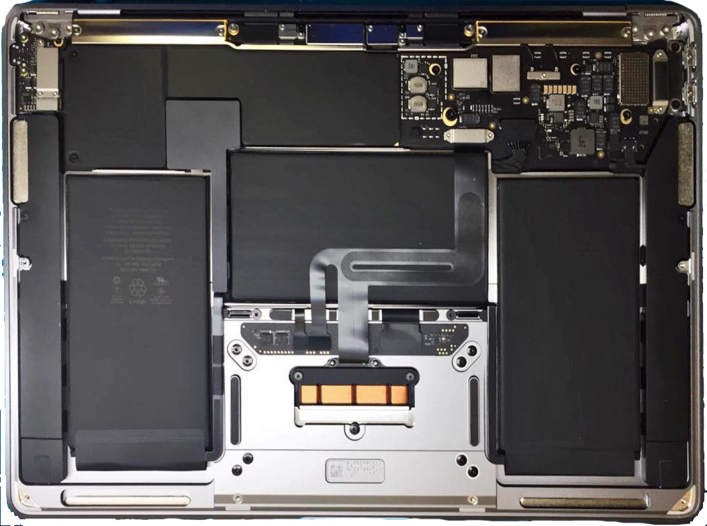
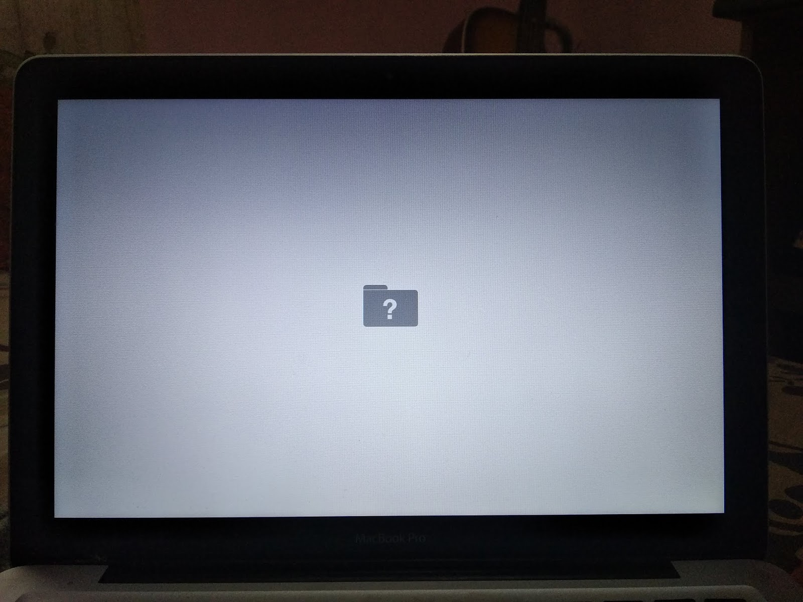
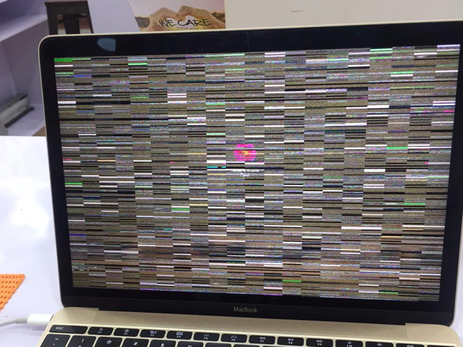

Setiap Hari Senin-Sabtu Jam 10.30 s/d 19.00 Minggu Jam 11.30 s/d 19.00
Alamat
Mall Ambassador, Jl. Prof. DR. Satrio. Lantai 2, No. 33
Sejak 2006
Memperoleh Kepercayaan Dan Loyalitas Pelanggan Kami. Melalui Mereka, Kami Tetap Ada Hingga Saat Ini, Memperluas Layanan Kami Dan Memperluas Jangkauan Kami Ke Seluruh Indonesia.
Service
Daftar kerusakan pada motherboard yang umumnya kami perbaiki dengan gejala sebagai berikut :
Macbook Mati Total
Sering Restart dan Mati Tiba-tiba
Lemot dan reinbow
Gangguan pengisian daya
Keyboard dan Trackpad Tidak Berfungsi
Gambar Bergaris
Layar Redup
Bunyi Beep
Folder Tanda Tanya Saat Boot Awal
Tidak Terdeteksi Sinyal Wifi
Contoh beberapa kerusakan dari custumer kami

Service Logic Apple Chip M1

Folder tanda tanya pada macbook

Layar bergaris akibat VGA Card
Sparepart
Apple tidak mengeluarkan sparepart original langsung, tetapi sparepart yang kami gunakan kondisi baru dan sudah lulus uji coba. Untuk sparepart khususnya buat Model Macbook, iPad dan iPhone diantaranya :